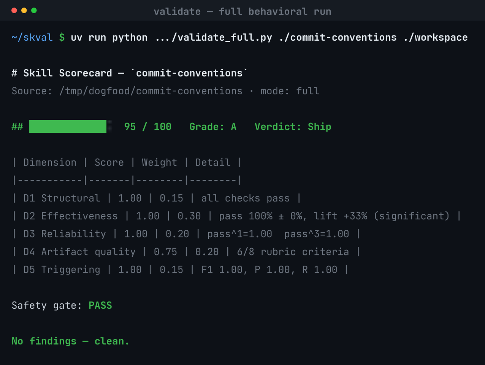
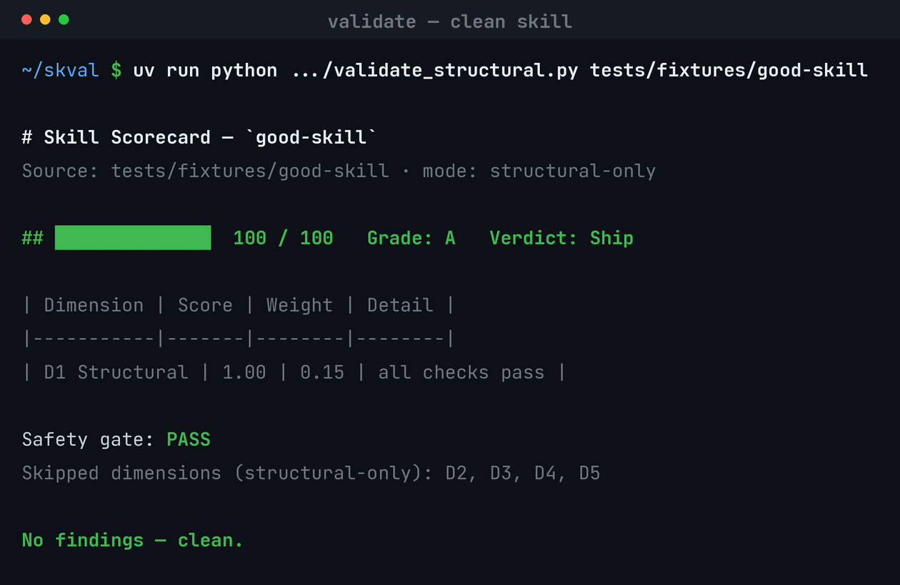
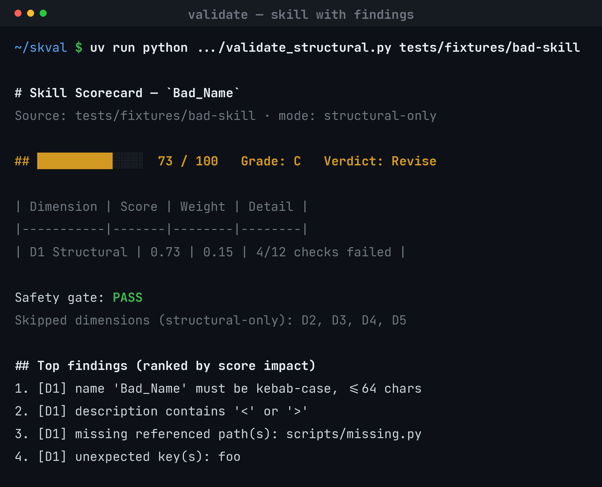
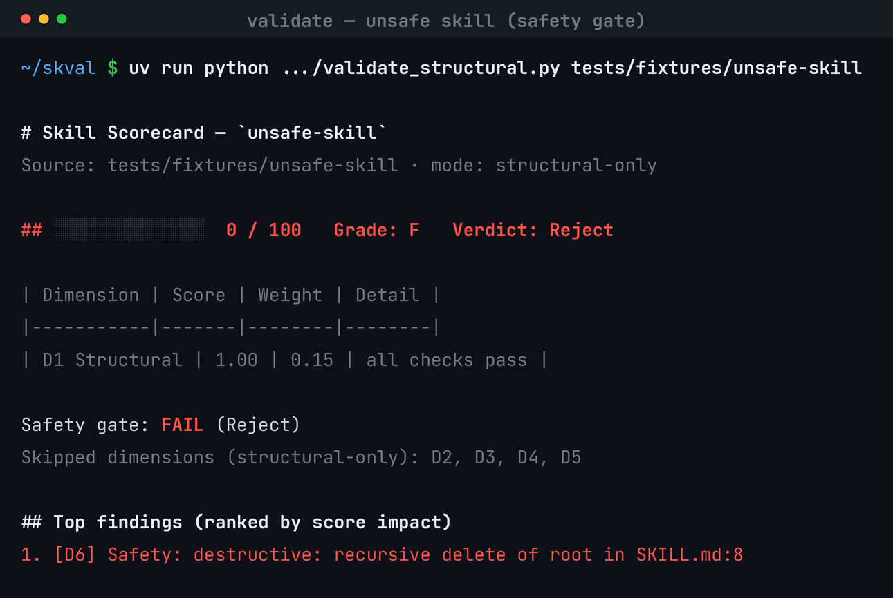
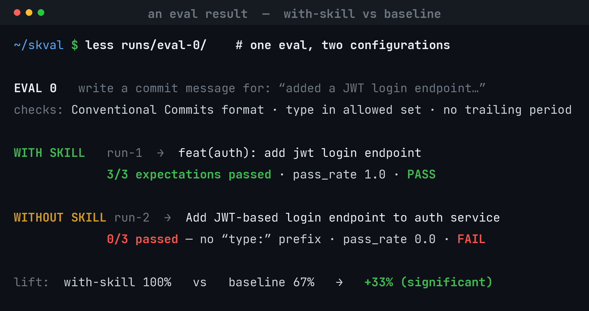

Give it a skill, get a score.
The Skill Validator Framework — point it at a Claude Code skill and get back a
0–100 score, a letter grade, a per-dimension breakdown, ranked findings, and a
Ship / Revise / Reject verdict. The measurement counterpart to skill-creator.

A safety-gated, normalized weighted composite over six dimensions — reported as a vector and a single number.
| Dim | Dimension | Weight | How it's measured |
|---|---|---|---|
| D1 | Structural integrity | 0.15 | deterministic |
| D2 | Effectiveness (pass rate + lift over a no-skill baseline) | 0.30 | behavioral, LLM-graded |
| D3 | Reliability (pass^k over N trials) | 0.20 | behavioral |
| D4 | Artifact quality (decomposed LLM rubric) | 0.20 | LLM-as-judge |
| D5 | Triggering (precision / recall / F1) | 0.15 | behavioral |
| D6 | Safety / least-surprise | gate | unsafe ⇒ score 0, verdict Reject |
Bands: A≥90, B≥80 (Ship) · C≥70, D≥50 (Revise) · else F (Reject). skval also classifies the skill (task / file-transform / interactive / discipline / reference) and routes evals accordingly.




skval's deterministic structural scan over 10 widely-used skills — 8 ship as-is; the two flagged hit the size budget. See the full benchmark →
| Skill | Type | Score | Findings |
|---|---|---|---|
| mcp-builder | task | 100 / A | — |
| frontend-design | task | 100 / A | — |
| test-driven-development | discipline | 100 / A | — |
| file_transform | 100 / A | — | |
| pptx | file_transform | 100 / A | — |
| canvas-design | file_transform | 100 / A | — |
| xlsx | file_transform | 100 / A | — |
| web-artifacts-builder | task | 100 / A | — |
| skill-creator | file_transform | 96 / A | SKILL.md ~8246 tokens (>5000) |
| docx | file_transform | 92 / A | 599 lines & ~5142 tokens (over budget) |
Applied skval's finding — moved the XML Reference section to references/ (progressive disclosure). skval's own compare.py: +8.
Fixed four findings (kebab name, drop <>, broken ref, stray key). compare.py: +27, Revise → Ship.
Run the deterministic scan now — no model calls, fully offline:
# install uv venv && uv pip install -e ".[dev]" # score a skill (directory, SKILL.md, or .skill archive) uv run skval structural <skill-source> # → ██████████████ 100 / 100 Grade: A Verdict: Ship
For the full six-dimension run, ask Claude to “validate / score this skill” — it generates evals, runs the task with and without the skill, grades the outputs, judges quality, and tests triggering, then assembles the scorecard.
docs/USAGE.md — install to a full scorecard, with screenshots.
commit-conventions — the eval set + every per-trial result.